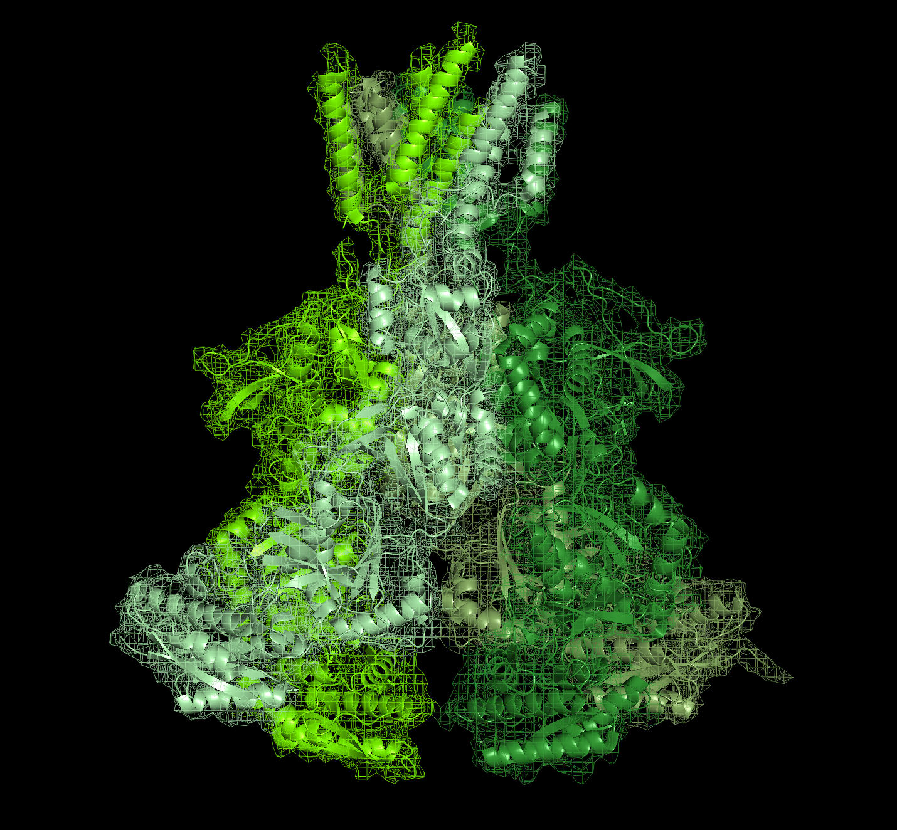
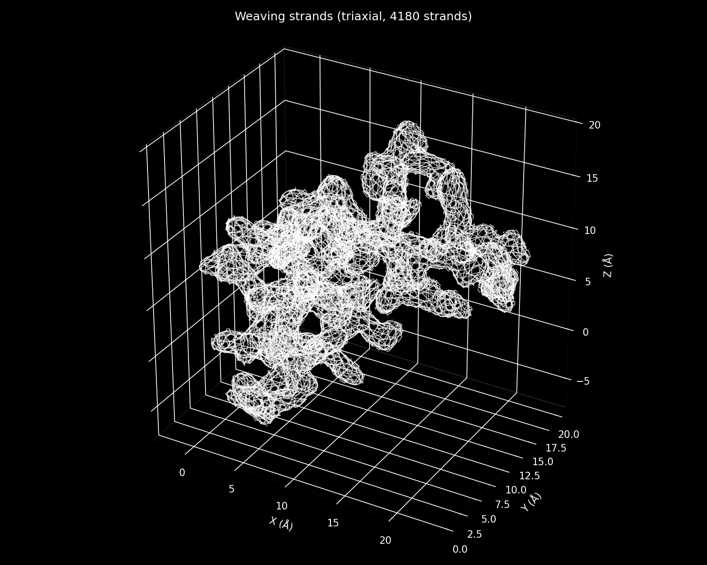
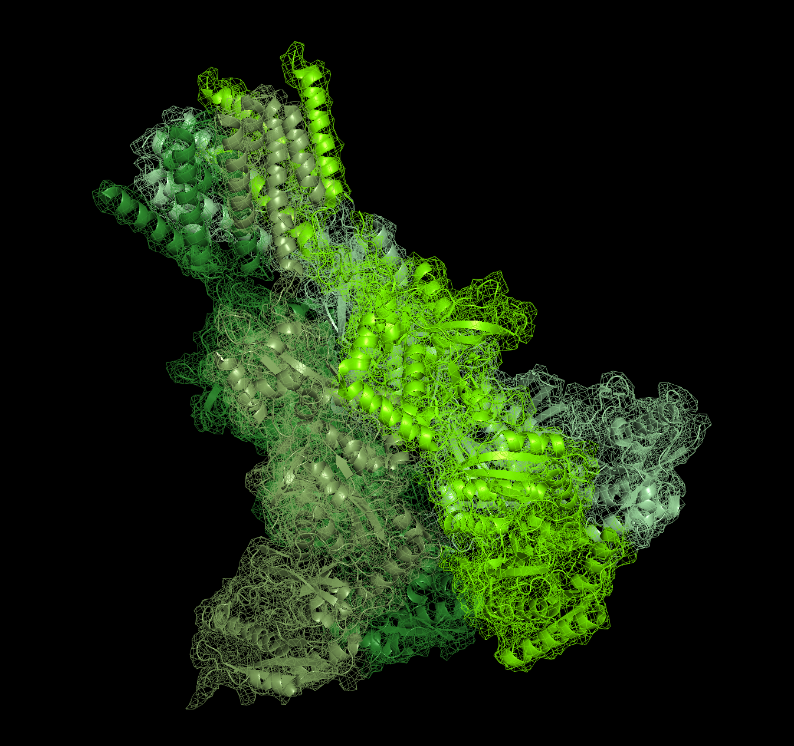
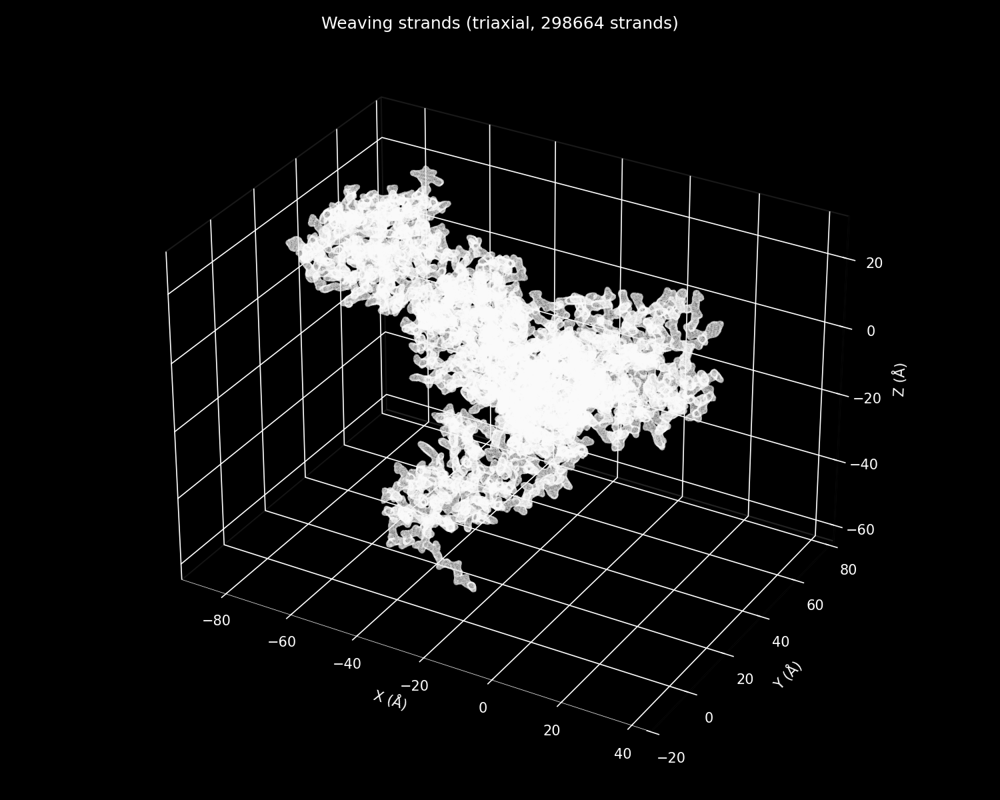

We were interested in light and shadow, in the ways in which 3D shapes create intersecting and dynamic patterns when projected onto 2D surfaces. We were also interested in molecular structure at variable scales, including proteins involved with memory, such as NMDA receptors.

We decided that we wanted to create semi-transparent sculptures inspired by protein structures. We started researching methods for rendering these structures in a process-oriented manner.
The Methods
One initial idea was to use crochet. Charlotte has crocheted for years and is heavily inspired by Ruth Asawa's wire-looped art, from growing up visiting it in local San Francisco museums. We also found Jessica Polka's crochet protein structure, which showed that the approach was tractable.
Two years ago, Liam and Charlotte visited the Louisiana Museum outside of Copenhagen and went to an exhibit by the Kenyan design studio Cave_bureau, where they wove a huge structure of a cave interior out of reeds using a technique called Kagome weaving.
Kagome weaving is a traditional triaxial weaving technique from Japan. In standard weaving, there are two sets of strands — a warp and a weft — that run perpendicular to one another. In triaxial weaving, three sets of strands intersect with each other at 120 degrees, leading to hexagons:
The Cave_bureau weave was created in collaboration with Professor Phil Ayres, an architect at CITA Denmark, and Allison Grace Martin, an Italy-based artist. We read two of their papers focused on developing mathematical principles for architectural-scale Kagome weaving. Specifically, Martin introduces what she calls "singularities" in the weave: polygons with more or fewer sides which induce positive or negative curvature in the weave structure.
We created a Python package that takes a protein shape file (from PDB, in CIF format) and generates three different types of patterns: a quadrature weave, a Kagome-style triaxial weave, or a crochet pattern. In addition, you can create your own Kagome patterns by adding individual singularities to the mesh and visualizing how that changes the overall shape.
We started by working with crambin, a small 48-amino-acid plant peptide with a relatively simple structure (two alpha helices and a beta sheet). The level of smoothing and gap-filling applied to the PDB file affects the visual outputs:
Base

Dense
Denser
We then generated a crochet pattern with a high globularity and crocheted it in real life. This pattern captured the larger structure of the protein and some of its lumpiness but, given that this is a simple protein, was not particularly interesting. However, the pattern generation worked and produced a legible and mathematically consistent pattern.
Moving on to the NMDA receptor, a much larger protein with multiple subdomains, we had to make several changes to the algorithm to simplify the strand assignment and make such a large weave computationally feasible to render.


The Next Steps
We are still working on the algorithm, improving performance and output rendering. Furthermore, finding globular structures for more interesting and relevant proteins (like the NMDA receptor) that can be converted into tangible crochet or woven outputs is key. We are still playing with the parameters to find optimal ones that balance design fidelity with weaving tractability.